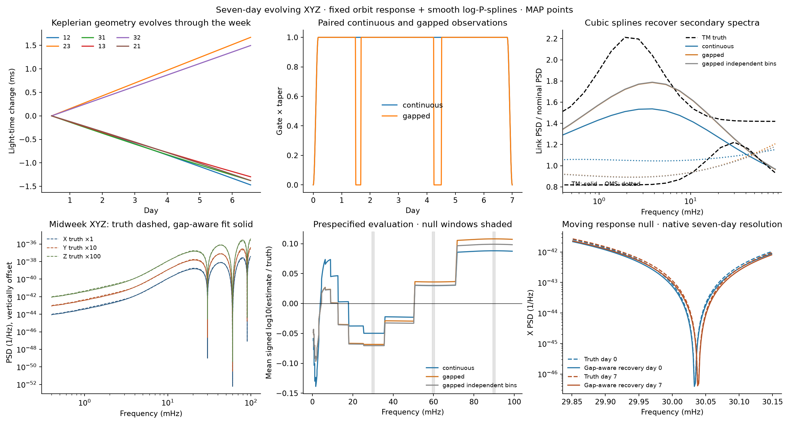

Seven-day evolving XYZ with gaps#
This case simulates 120,960 real XYZ samples over seven days, at a five-second cadence, and recovers smooth secondary-noise spectra through an evolving, unequal-arm TDI-2 response. The same simulated record is observed continuously and with two gaps. Both fits use a joint gap-aware Gaussian likelihood, retaining XYZ, cross-frequency and real/imaginary correlations.
uv sync --locked --extra gapped
uv run --extra gapped lisa-demo-gaps --output outputs/seven_day
--quick retains seven days and the native 1.65 microHz frequency spacing,
but reduces the number of source bands and fitting features.
Following the short-segment orbit idea#
Burke et al., Noisy Pipelines I use four seven-day segments from a longer simulation, with eight orbit epochs per segment. Stationary TM/OMS secondary spectra acquire nonstationarity through the changing light travel times. Their likelihood averages covariance kernels across epochs and includes data conditioning; their example has no gaps.
Here, lisaorbits’ offline Keplerian approximation supplies six directed photon travel times. The paper’s TDI-2 mixing matrix maps stationary link noises to XYZ. At eight epochs we construct response filters, then interpolate their time-domain outputs using a partition of unity. Every epoch acts on the same link-noise realization. This preserves cross-epoch correlations and produces genuinely time-varying XYZ, rather than a draw from an orbit-averaged stationary spectrum.
This is a quasi-static filter simulation. It does not reproduce noncommuting time-delay operators, the paper’s ESA orbit, or its filtering/decimation chain. The known geometry places the dips; their positions are not fitted sine parameters.
What the spline learns#
Two cubic log-P-splines describe frequency-dependent multiplicative corrections to the nominal TM and OMS link PSDs. The evolving response propagates these recovered spectra into the full complex XYZ spectral matrix at any epoch. The secondary spectra are stationary, as in the paper’s short-segment model; no freely varying time-spline coefficients are inferred.
Each component uses seven library SplineBasis functions on log frequency
and the library’s trace-normalized integrated second-derivative penalty.
A fixed proper Gaussian prior has precision 10 P + I / 0.8² for natural-log
PSD weights. Continuous and gapped fits have identical source bands, basis,
penalty, prior, frequencies and evaluation grid. Knots and regularization are
specified before simulation. There is no model selection on the evaluation
truth or independent validation data.
For tractability, log corrections are constant within 32 declared logarithmic source-frequency bands (16 in quick mode). The physical transfer is still evaluated at every native Fourier bin, including around the response nulls. This band discretization belongs to both the simulator and its likelihood; it is not hidden interpolation error.
Observations and likelihood#
GapLike constructs four-hour and six-hour gaps at days 1.5 and 4.25, with 30-minute edge tapers and a common segment Tukey window. The un-tapered duty cycle is 94.05%. Zero-filled samples are never counted as additional observations.
The standard inference retains 48 prespecified complex XYZ Fourier bins (288 real features), including neighbouring native bins at the nominal 30, 60 and 90 mHz response nulls. Its likelihood is exact for this fixed compressed feature vector under the declared simulator, not for all 120,960 × 3 samples. It propagates the actual mask/window and all epoch filters into the joint real covariance. It includes the pseudo-covariance that a proper-complex likelihood would omit. See the joint likelihood derivation and checks.
A third fit keeps the correct per-bin 6×6 real covariance but drops inter-frequency correlations. This is an explicitly labelled approximation, not uncorrected zero-filled Whittle inference. All three fits use three MAP optimization restarts. They produce point reconstructions, not VI or NUTS posterior intervals.
Saved seed-7 result#

Fit |
Auto log10 RMSE |
Signed log10 residual |
Complex cross RMSE* |
Coherence RMSE |
Validation q / dimension |
|---|---|---|---|---|---|
continuous |
0.0633 |
+0.0141 |
0.0364 |
0.0002 |
0.951 |
gapped |
0.0738 |
+0.0157 |
0.0330 |
0.0001 |
1.015 |
gapped independent bins |
0.0699 |
+0.0109 |
0.0298 |
0.0001 |
1.020 |
*Complex cross errors normalized by the geometric mean of the corresponding true auto spectra. Four independent validation realizations; q/d should be near 1 in expectation, not forced by an in-sample amplitude fit.
All fits use the same 7 cubic basis functions per component and the same proper Gaussian prior; no knot tuning or posterior uncertainty claim.
The continuous reconstruction is slightly more accurate in this realization. The gap-aware and independent-bin fits are close; the independent-bin point estimate has slightly lower reconstruction RMSE here. This single paired simulation does not establish a scientific advantage for either approximation. The exact likelihood supplies a controlled benchmark.
Reconstruction scores cover all XYZ auto spectra, complex cross spectra and
coherence on a fixed grid of 17 epochs, logarithmic frequencies, and native
bins within 0.6 mHz of the three nulls. errors.json also reports signed
residuals and adjacent-frequency residual differences in each null window.
The known response strongly constrains the dip shapes; small oscillation
scores do not demonstrate that unconstrained splines discover the nulls.
Four independent realizations, seeds 1007–1010, provide final predictive checks. Their quadratics are scored with the full covariance for every candidate; an injected-covariance control is also saved. No evaluation data are used for fits or restarts. The in-sample amplitude score is not used as a goodness-of-fit claim. A small validation sample does not calibrate posterior uncertainty or demonstrate ensemble coverage.
Outputs and reproducibility#
comparison.png: the compact continuous/gapped comparison above.recovery.npz: real XYZ data, masks, windows, native bin indices, source bands, library basis/penalty, injected and fitted corrections, and full reconstructed spectral matrices.errors.jsonanderrors.md: reconstruction and independent predictive scores, optimization objectives, gradients and all restart results.run.json: dependency versions, Git/source hashes, orbit and observation settings, validation seeds and approximation limits.
The saved receipt and
detailed errors accompany this figure. The
old stationary-surrogate prototype remains available as
python -m lisa_case_studies.stationary_gap_control for historical controls;
lisa-demo-gaps runs the time-varying spline case described here.